Rear Door Reassembly |
| 1. Apply Body Grease |
Apply body grease to the sliding parts of the rear door window regulator RH, rear door outside handle frame RH and rear door lock assembly RH.
| 2. Precautions for Applying Blackout Tape |
Application Temperature
When the ambient temperature is low (15°C or less), use an infrared lamp to warm the base (body application surface) and blackout tape to 20-30°C before performing the work. Also, when the temperature is high (35°C or more), cool them to 35°C or less before performing the work.
Work Before Application
If paint nibs, dust, etc. adhere to the base (body application surface), air will be trapped when the blackout tape is pressed on, causing poor appearance; therefore, remove paint nibs and also remove dust from the base, the area around the base and the blackout tape.
Handling Blackout Tape
Blackout tape deforms easily, so sandwich it between pieces of cardboard, etc. and store it in a dry, flat place.
Tips for Applying Blackout Tape (Squeegee Operation and Application Method - General Areas)
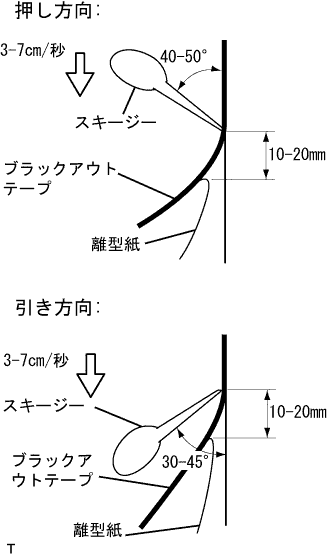 |
To prevent air bubbles, lightly lift the part not being pressed by the squeegee so that it does not contact the base, tilt the squeegee at 40-50° (push direction) or 30-45° (pull direction), and press the tape on by pushing air outward at a slow, constant speed of 3-7cm/second with a pressing force of 20-30N{2-3kgf}.
 |
Tips for Applying Blackout Tape (Squeegee Operation and Application Method - Hemmed Areas)
For areas that cannot be pressed with the squeegee at one time, press them on in several steps. In particular, for small radii at hemmed areas, gradually adhere the tape in 2-3 steps using your finger or the thick end of the squeegee.
Tips for Applying Blackout Tape (Squeegee Operation and Application Method - Corners)
At corners, after peeling off the release paper, carefully adhere the tape with your fingertips.
To prevent poor appearance due to sharp tape corners, heat the blackout tape with a dryer before folding in each corner, and then fold in and adhere the corners in order.
Inspection After Application
If poor appearance occurs after application is complete, reapply using new blackout tape.
| 3. Install Blackout Tape NO.3 RH |
Clean Adhesive Surface (When Using Infrared Lamp)
Warm the blackout tape and adhesive remaining on the body with an infrared lamp.
Using a shop rag, etc., scrape off the blackout tape and adhesive remaining on the body.
Clean the adhesive surface with white gasoline.
Clean Adhesive Surface (When Using Tape Removal Disc)
Set 8 discs in the holder, and install the removal disc to an air drill.
Using the removal disc, scrape off the blackout tape and adhesive remaining on the body.
Clean the bonding surface with white gasoline.
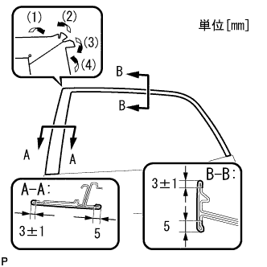 |
Apply new blackout tape No.3 LH to the position shown in the illustration.
| 4. Install Rear Door Belt Moulding Assembly RH |
 |
Engage the 8 claws to install the rear door belt moulding assembly LH.
| 5. Install Rear Door Outside Handle Frame Sub-assembly RH |
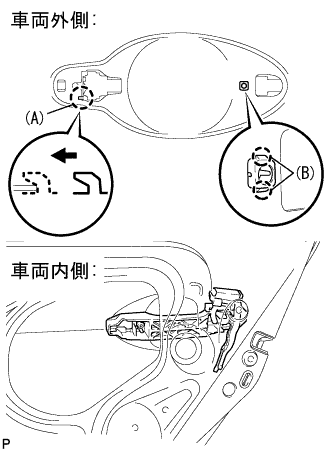 |
Pull the rear door outside handle frame RH toward the rear of the vehicle, engage claw (A), and temporarily install it to the rear door panel.
Engage the 2 claws (B).
| 6. Install Rear Door Outside Handle Pad RR |
 |
Engage the 2 claws to install the rear door outside pad RR.
| 7. Install Rear Door Outside Handle Pad FR |
 |
Engage the 2 claws to install the rear door outside handle pad FR.
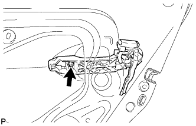 |
Using a torx socket wrench T30, tighten the torx screw.
| 8. Install Rear Door Outside Handle Assembly RH |
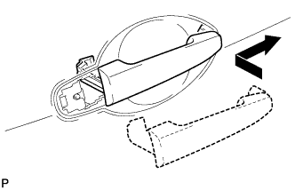 |
Insert the rear end of the rear door outside handle assembly RH into the rear door outside handle frame RH.
Insert the front end of the rear door outside handle assembly RH into the rear door outside handle frame RH, and slide the rear door outside handle assembly RH toward the front of the vehicle to install it.
| 9. Install Rear Door Outside Handle Cover |
 |
Engage the claws to temporarily install the rear door outside handle cover.
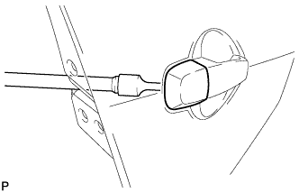 |
Using a Torx socket wrench T30, install the rear door outside handle cover with the Torx screw.
| 10. Install Rear Door Inside Locking Cable Assembly RH |
 |
Install the rear door inside locking cable RH to the rear door lock assembly RH.
 |
Engage the 3 claws of the rear door lock assembly RH.
| 11. Install Rear Door Lock Remote Control Cable Assembly RH |
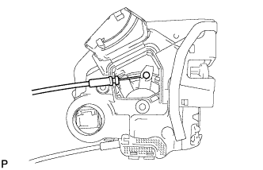 |
Install the rear door lock remote control cable RH to the rear door lock assembly RH.
 |
Engage the claw of the rear door lock assembly RH.
| 12. Install Rear Door Lock Assembly RH |
Install a new door lock wire harness seal to the rear door lock assembly RH.
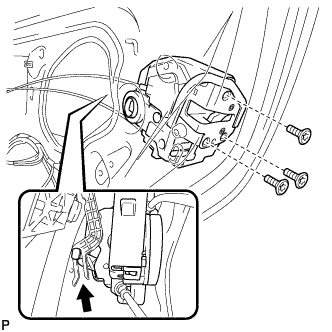 |
Insert the rear door lock assembly RH into the release plate of the rear door outside handle frame RH and set it in the rear door panel.
Using a Torx socket wrench T30, install the rear door lock assembly RH with the 3 Torx screws.
| 13. Install Power Window Regulator Motor Assembly RH |
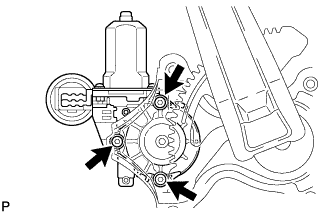 |
Using a Torx socket wrench T25, install the power window regulator motor assembly RH to the rear door window regulator RH with the 3 Torx screws.
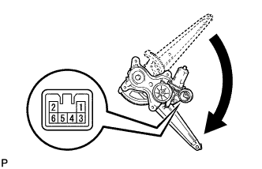 |
Connect the positive (+) battery lead to terminal 2 and the negative (-) battery lead to terminal 1 of the power window regulator motor assembly RH connector, and move the lift arm to the position shown in the illustration.
| 14. Install Rear Door Window Regulator w/ Motor Assembly |
Temporarily install the temporary bolt to the rear door window regulator RH.
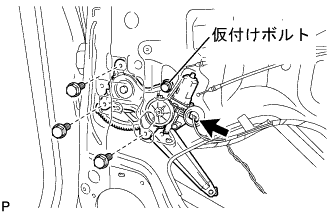 |
Temporarily install the rear door window regulator w/ motor assembly to the rear door panel.
Install the rear door window regulator w/ motor assembly with the 3 bolts and the temporary bolt.
Connect the power window regulator motor assembly RH connector.
| 15. Install Rear Door Glass Sub-assembly RH |
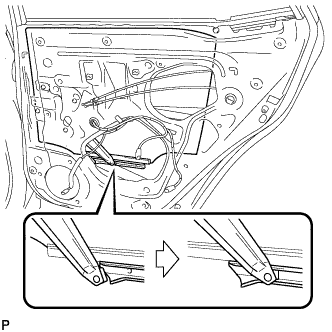 |
Slide the rear door glass RH as shown in the illustration and install it to the rear door window regulator RH.
| 16. Install Rear Door Quarter Window Glass RH |
Install the rear door quarter window glass RH to the rear door quarter window weatherstrip RH.
 |
Install the rear door quarter window glass RH together with the rear door quarter window weatherstrip RH.
| 17. Install Rear Door Window Division Bar Sub-assembly RH |
 |
Insert the rear door window division bar RH from above the vehicle, and install it with the 2 bolts and screw.
| 18. Install Rear Door Glass Run RH |
 |
Install the rear door glass run RH.
| 19. Install Rear Door Frame Garnish RH |
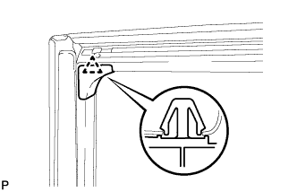 |
Engage the clips and install a new rear door frame garnish RH.
| 20. Install Rear Door Weatherstrip RH |
 |
Engage the 17 clips and install the rear door weatherstrip RH to the rear door panel.
| 21. Install Rear Door Check Assembly RH |
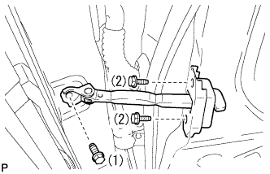 |
Install the rear door check assembly RH with the 3 bolts.
| 22. Install Rear Door Service Hole Cover RH |
Apply butyl tape to the door panel side.
Pass each connector, the rear door lock remote control cable RH and rear door inside locking cable RH through a new rear door service hole cover RH.
 |
Align a new rear door service hole cover RH with the reference position on the rear door panel and attach it.
Connect the connector.
| 23. Install Speaker Assembly RR |
 |
Install the speaker assembly RR to the rear door with 3 new rivets.
Connect the connector.
| 24. Install Rear Door Glass Weatherstrip INN RH |
 |
Install the rear door glass weatherstrip inner RH to the rear door panel.
| 25. Install Power Window Regulator Switch Assembly RR |
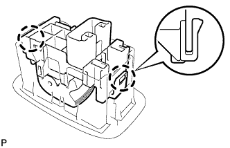 |
Engage the 2 claws and install the rear power window regulator switch assembly to the switch base.
| 26. Install Rear Power Window Regulator Switch Assembly w/ Switch Base |
 |
Engage the 4 claws and install the rear power window regulator switch assembly w/ switch base to the rear door trim board RH.
| 27. Install Rear Door Inside Handle Sub-assembly RH |
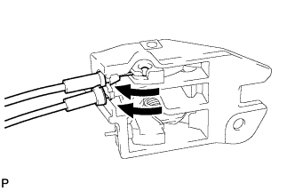 |
Install the rear door lock remote control cable RH and rear door inside locking cable RH to the rear door inside handle RH.
 |
Engage the 2 claws to install the rear door inside handle RH to the rear door trim board RH.
| 28. Install Rear Door Trim Board Sub-assembly RH |
 |
Engage the 3 claws to install the rear door trim board RH to the rear door glass weatherstrip inner RH.
Engage the 9 clips to install the rear door trim board RH to the rear door panel.
 |
Install the 3 screws.
| 29. Install Door Assist Grip Cover RH |
 |
Engage the 4 claws to install the door assist grip cover RH to the rear door trim board RH.
| 30. Install Rear Door Inside Handle Bezel RH |
 |
Engage the 3 claws to install the rear door inside handle bezel RH to the rear door trim board RH.
| 31. Connect Battery Negative Terminal |
| 32. Setting Procedure When Disconnecting/Reconnecting Battery Terminal |
)| 33. Power Window Registration Setting |
)| 34. Inspect Power Window Operation |
)